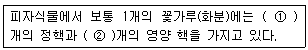

종자기능사 (2007-07-15 기출문제)
1과목: 종자(임의구분)
1. 어미포기(母本)는 꽃 몽우리 때 꽃밥(꽃가루 주머니)을 따내고 봉지를 씌우며 아비 포기(父本)는 꽃이 피기전에 봉지를 씌운다. 이것은 다음 중 어느 것을 설명한 것인가?
- 자웅동화 식물의 교잡 육종에 있어서 교잡방법의 한 과정
- 자웅이화 식물의 교잡 육종에 있어서 교잡방법의 한 과정
- 분리 육종에 있어서 교잡 방법의 한 과정
- 순계 분리 육종법에 있어서 교잡 방법의 한 과정
(정답률: 55%)

2. 채소종자 채종에 가장 알맞은 시기는 보통 어느 때인가?
- 유숙기
- 녹숙기
- 갈숙기
- 고숙기
(정답률: 85%)
3. 종자의 씨껍질을 구성하는 세포층이 아닌것은?
- 경층(硬層)
- 팽창층(膨脹層)
- 기모층(基毛層)
- 색소층(色素層)
(정답률: 53%)
4. 종자를 정선한 후 종자처리를 실시하는 목적으로 틀린 것은?
- 종자전염병균이나 해충을 방제하기 위한 종자소독처리
- 토양 또는 공기를 통하여 전염하는 병균이나 해충으로부터 유식물을 보호하기 위한처리
- 적정한 건조를 통해 저장을 용이하게 하기 위한 처리
- 종자의 발아속도 및 균일성을 향상시키기 위한 특수처리
(정답률: 60%)
5. 다음 채소작물 종자 중 광발아성 종자에 속하는 것은?
- 갓
- 가지
- 오이
- 파
(정답률: 58%)
6. 다음 중 '발아세'의 정의로 가장 적합한 것은?
- 발아가 가능한 종자의 비율
- 발아가 끝난 시기까지의 총 발아율
- 치상 후 일정기간까지의 발아율 또는 표준발아검사에서 중간조사일까지의 발아율
- 중간까지의 발아 비율
(정답률: 81%)
7. 다음의 현상 중 종자가 퇴화할 때 나타나는 증상이 아닌 것은?
- 호흡의 감소
- 발아율의 저하
- 효소활동의 감소
- 종자 침출물의 감소
(정답률: 83%)
8. 종자의 휴면에 관여하는 생화학적 기구에 대한 설명이 잘못된 것은?
- 사과를 저온에서 후숙시키면 유리아미노산이 증가한다.
- 휴면종자가 침윤되면 RNA와 단백질을 합성하고 휴면정도가 경감된다.
- 루핀과 헤어리베치 종자는 고온,저습 저장을 하면 경실화되는 경향이 있다.
- 단풍나무의 종자는 층적기간중에 당의 함량은 증가하고, 아미노산의 함량은 감소한다.
(정답률: 41%)
9. 파종 직후에 발아 할 수 있는 종자를 발아하기에 부적당한 조건하에 잠시 동안 두면 휴면 상태로 들어가는 경우를 칭하는 용어는?
- 1차휴면
- 후숙
- 2차휴면
- 자발휴면
(정답률: 45%)
10. 종자의 검사 중 순도를 검사하기 위한 조사항목으로 가장 바른 것은?
- 순수종자, 타종자, 이물
- 발아종자, 잡초종자, 이물
- 병에 감염된 종자, 순수종자, 발아종자
- 발아종자, 병에 감염된 종자, 잡초종자
(정답률: 73%)
11. 다음 중 종자의 발아에 관한 설명 중 틀린 것은?
- 종자에서 유아,유근이 출현하는 것을 '발아'라고 한다.
- 토양에 파종했을 때에 발아한 새싹이 자상으로 출현하는 것을 '출아'라고 한다.
- 종자가 수분을 흡수하면 가스교환이 어려워진다.
- 종자는 적당한 수분을 흡수해야 발아한다.
(정답률: 89%)
12. 화분은 싹이 터 생식핵이 갈라져 마지막에는 2개의 정핵이 되며, 이 정핵은 1개만이 난세포와 결합하여 수정란이 되는데, 이것이 발육하여 된 것을 무엇이라 하는가?
- 종피
- 배유
- 배
- 과피
(정답률: 66%)
13. 종자산업법상 콩 종자에 발생하는 특정병은?
- 도열병
- 흰가루병
- 모자이크병
- 자반병
(정답률: 71%)
14. 종자발아율을 계산하는 방법으로 알맞은 것은?
- 발아율(%) =총공시종자입수/총발아입수 x 100
- 발아율(%) = 총발아입수/100 x 공시입수
- 발아율(%) = 100/총발아입수 x 공시입수
- 발아율(%) = 총발아입수/총공시종자입수 x 100
(정답률: 71%)
15. 다음 중 화아유도에서 종자와 과실로 분화되는 것은?
- 체세포조직
- 통도조직
- 영양분열조직
- 생식분열조직
(정답률: 61%)
16. 다음 중 피자식물의 배유 세포의 핵은 몇 배체인가?
- 1배체
- 2배체
- 3배체
- 4배체
(정답률: 77%)
17. 고온항온 건조기법에 의한 종자건조시 건조기의 온도로 가장 알맞은 것은?
- 57 ~ 78도
- 88 ~ 96도
- 1⑤ ~ 125도
- 130 ~ 133도
(정답률: 54%)
18. 종자의 수확 후 관리방법 중 맞지 않는 것은?
- 생 탈곡한 종자는 즉시 얇게 펴 골고루 말린다.
- 직사광선하에서는 너무 온도가 높지 않도록 한다.
- 종자의 수분 함량이 많은 경우에는 건조온도를 높게하여 말린다.
- 수분평형량을 감소시킨다.
(정답률: 60%)
19. 종자산업법 상 벼의 종자전염병으로 종자검사 규격에 명시된 특정병에 속하는 것은?
- 이삭누룩병
- 갈색무늬병
- 깨씨무늬병
- 선충심고병
(정답률: 51%)
20. 상추 종자 발아검정시 완전묘 80개, 경 결함묘 5개, 2차감염묘 3개, 피해묘 3개, 부패묘 3개, 미발아립 6개로 평가되었다. 이 때 발아율은?
- 80%
- 85%
- 88%
- 91%
(정답률: 42%)
2과목: 작물육종(임의구분)
21. 염색체가 자극을 받아 절단된 단면(fragment)이 염색체에 다시 부착하지 못했을 때에 생기는 현상은?
- 절단(fragment)
- 결실(deficiency)
- 전좌(translocation)
- 중복(deplication)
(정답률: 62%)
22. 복교잡을 가장 잘 표현한 것은?
- (A X B) X (C X D)
- A X B
- (A X B) X C
- (A X B) X B
(정답률: 56%)
23. 품종의 퇴화 원인 중 다음 대의 유전자 변화를 초래하지 않는 것은?
- 바이러스 감염에 의한 퇴화
- 기계적 혼입에 의한 퇴화
- 자연교잡에 의한 퇴화
- 돌연변이에 의한 퇴화
(정답률: 36%)
24. 씨 없는 수박의 1대 채종을 위한 생산 방법의 표현으로 옳은 것은? (단, ♀ X ♂ 형태로 표현한다.)
- 4n X 2n
- 2n X 4n
- 3n X 2n
- 2n X 3n
(정답률: 42%)
25. 일대잡종 종자 채종시 자가불화합성을 이용해서 상업적 종자를 얻는 작물은?
- 배추
- 토마토
- 고추
- 오이
(정답률: 56%)
26. 암수딴그루(자웅이주성)을 이용하여 일대 잡종 종자를 생산하는 작물은?
- 양파
- 당근
- 시금치
- 양배추
(정답률: 72%)
27. 계통육종법에서 인위선별이 행해지는 최초의 세대수는?
- F2
- F3
- F4
- F5
(정답률: 75%)
28. 작물의 1대 잡종(F1)에서 수확한 종자(F2)를 재배하여 수확한 종자의 특성은?
- 변이가 심하게 일어나 품질과 균일성이 떨어진다.
- 품질과 균일성이 증대된다.
- 균일성은 떨어지나 품질은 좋아진다.
- 품질과 균일성은 증대되나 병해충에 약하다.
(정답률: 60%)
29. 다음 [보기]의 ( )에 적합한 용어들은?

- ① 1개, ② 1개
- ① 1개, ② 1~2개
- ① 2개, ② 1개
- ① 1~2개, ② 2개
(정답률: 67%)
30. 완두의 자엽이 황색인 것과 녹색인 것이 F2에서 900:300으로 분리되었다. 이론비가 3 : 1 이라고 할 때 X제곱 값은 ?
- 0
- 0.3
- 0.5
- 1.0
(정답률: 46%)
31. 다음은 벼의 주요 육종목표이다. 이 중 위도 차이에 따라 가장 큰 영향을 받는 것은?
- 단백질 함량
- 내염성
- 조만성
- 내도복성
(정답률: 47%)
32. 다음 중 품종교체의 요인과 가장 거리가 먼 것은?
- 농업인구의 정체
- 재배방식의 변화
- 병해충 발생의 증가
- 농업용 간척지의 개발
(정답률: 71%)
33. 2종의 우성유전자가 작용해서 전혀 다른 새로운 형질을 발현하게 하는 유전자는?
- 보족유전자
- 중복유전자
- 복수유전자
- 억제유전자
(정답률: 59%)
34. 모성(母性) 유전의 특징에 속하지 않는 것은?
- F1은 항상 모친과 같은 표현형을 나타낸다.
- 자손의 유전자형에 관계없이 모친의 유전자에 의해 표현형의 특성이 지배된다.
- 보통 유전에서 보다 한 세대씩 늦어지는 지체유전을 한다.
- 모성유전은 비 멘델식 유전만을 한다.
(정답률: 73%)
35. 교배 모본 선정시 고려사항에 포함되지 않는 것은?
- 유전자원의 평가성적을 검토한다.
- 대량증식을 위하여 양친의 조직배양시 재분화능력을 검토한다.
- 교배 모본으로 사용된 실적을 검토한다.
- F1의 잡종강세를 이용하는 경우는 조합능력을 검정하여 교배친을 선정한다.
(정답률: 54%)
36. 다음 중 육종기술의 과학화와 체계화를 이룬 최초의 계기가 된 업적은?
- 멘델의 유전법칙의 발견
- X선, 감마선 등을 이용한 돌연변이 기술 개발
- 2차 대전 이후의 농약 개발
- DNA 분자구조 해석
(정답률: 87%)
37. 다면적 발현의 설명중 옳은 것은?
- 1개의 유전자가 1개의 형질발현에 관여할 경우
- 1개의 유전자가 2개 이상의 형질발현에 관여할 경우
- 2개 이상의 유전자가 1개의 형질발현에 관여할 경우
- 2개 이상의 유전자가 2개 이상의 형질발현에 관여할 경우
(정답률: 72%)
38. 유전자의 연관을 설명한 것 중 옳지 않은 것은?
- 두 유전자가 서로 동일한 염색체 상에 위치할 때 연관이라 한다.
- 연관된 두 유전자는 서로 다른 표현형 발현에 관여하기도 한다.
- 두 유전자의 위치가 가까울 수록 후대에서 조환형의 출현빈도가 낮다.
- 두 유전자가 연관되어 있으면 멘델의 독립법칙에 준하여 후대로 유전한다.
(정답률: 35%)
39. 생산력 검정 중 포장시험법의 일반적인 주의사항이 아닌 것은?
- 실험포장의 토양이나 기상조건은 일반농가의 포장조건과 비슷하게 한다.
- 토양의 균일성을 유지한다.
- 품종 및 계통간의 경합현상을 피한다.
- 시험구 반복은 두지 않는다.
(정답률: 70%)
40. 질적 형질을 지배하는 유전자는?
- 주동 유전자
- 양적 유전자
- 치사 유전자
- 미동 유전자
(정답률: 59%)
3과목: 작물(임의구분)
41. 한 육종가가 외딴 섬에서 오래 전부터 재배하고 있던 콩종자를 수집하였다. 이 수집 콩 집단내에서 자연적으로 출현하는 유전적 변이를 찾아 우량품종을 육성하고자 할 경우 가장 적합한 육종방법은?
- 집단 육종법
- 교잡 육종법
- 분리 육종법
- 도입 육종법
(정답률: 42%)
42. 다음 작물의 꽃 중에서 이형예현상이 일어나는 작물은?
- 조
- 기장
- 옥수수
- 메밀
(정답률: 66%)
43. 밤과 낮의 일교차가 심할 때 및 질소와 붕소 성분이 부족할 때 나타나는 카네이션의 생리장해는?
- 동공화
- 잎말이
- 언청이
- 꽃잎말이
(정답률: 60%)
44. 다음 중 화훼류의 분류상 다알리아와 작약이 해당되는 것은?
- 비늘줄기(鱗莖)
- 구슬줄기(球莖)
- 덩이줄기(塊莖)
- 덩이뿌리(塊根)
(정답률: 45%)
45. 자식약세 현상이 심한 작물들로만 바르게 짝지워진 것은?
- 무,옥수수
- 고추, 토마토
- 벼, 밀
- 오이, 참외
(정답률: 45%)
46. 벼의 줄기 속을 갉아먹는 해충은?
- 벼멸구
- 이화명충
- 혹명나방
- 벼물바구미
(정답률: 64%)
47. 다음 중 추위와 가뭄에 가장 강한 맥류는?
- 밀
- 호밀
- 보리
- 귀리
(정답률: 65%)
48. 작물 생육에 미치는 바람의 영향으로서 잘못 설명한 것은?
- 풍속이 3~4m/s에서는 습도를 낮추고, 증산작용을 활발하게 한다.
- 연한 바람은 양분의 흡수를 저해한다.
- 바람은 작물의 잎을 움직여 광투과를 원활하게 한다.
- 연한 바람은 풍매화의 정받이와 결실작용을 좋게 한다.
(정답률: 86%)
49. 다음 중 춘파화초에 속하는 것들로만 바르게 묶인 것은?
- 금잔화, 스톡
- 팬지, 프리뮬러
- 맨드라미, 코스모스
- 시네라리아, 칼세올라리아
(정답률: 51%)
50. 다음 중 작물의 수량을 결정짓는 3요소와 거리가 먼 것은?
- 경영자
- 품종
- 재배 환경 조건
- 재배 관리 기술
(정답률: 90%)
51. 다음 두류 중 씨뿌리는 시기가 가장 빠른 것은?
- 콩
- 완두
- 땅콩
- 강낭콩
(정답률: 78%)
52. 다음 중 1년생 밭 잡초인 것은?
- 쑥
- 메꽃
- 가래
- 명아주
(정답률: 70%)
53. 일반적으로 온대 지역에서 자라는 벼는 대부분 어떤 조건에서 출수가 촉진되는가?
- 고온, 장일
- 고온, 단일
- 저온, 장일
- 저온, 단일
(정답률: 50%)
54. 잡초의 방제방법이 잘못 연결된 것은?
- 기계적 방제 - 제초용 농기구 이용
- 생태적 방제 - 재배의 시기 조절
- 물리적 방제 - 밀식재배
- 화학적 방제 - 제초제 사용
(정답률: 78%)
55. 야생형의 벼가 인간이 재배하면서 분화되는 과정에 대한 설명 중 틀린 것은?
- 종자의 탈립과 산포능력이 상실되었다.
- 종실의 크기가 대형화 되었다.
- 털, 까락 등과 같은 방어적 구조가 퇴화되었다.
- 종자의 휴면성이 강해졌다.
(정답률: 75%)
56. 일반적으로 겨울철 재배온실의 이산화탄소 시비의 시기로 가장 적당한 때는?
- 해뜨기 1~2시간 전
- 해가 뜨고 2~3시간 후
- 정오부터 13시 사이
- 해지기 직전
(정답률: 64%)
57. 벼를 직파 재배하는 가장 큰 목적은?
- 미질향상
- 수량 증대
- 조기 수확
- 노동력 절감
(정답률: 70%)
58. 감의 떫은 맛을 없애는 방법(우리기)으로 적당하지 않은 것은?
- 40~42도의 더운물에 12~24시간 담가둔다.
- 30~40% 알콜을 뿌리고 밀폐시킨다.
- 500ppm 농도의 지베렐린 용액 속에 담가둔다.
- 이산화탄소의 농도를 50~90%로 하여 3~4일간 밀폐 저장한다.
(정답률: 70%)
59. 꽃이 핀 후 수확시기가 가장 빠른 채소는?
- 오이
- 참외
- 수박
- 멜론
(정답률: 83%)
60. 작물의 건물 1g을 생산하는데 소비된 수분량(g)을 가리키는 것은?
- 요수량
- 천립중
- 일사량
- 함수량
(정답률: 76%)